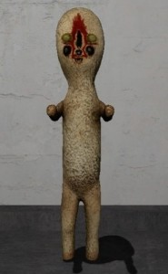
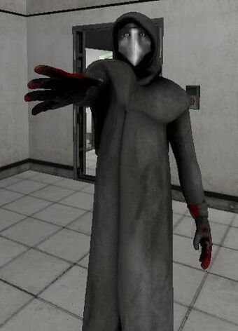

Объект №: SCP-173
Класс объекта: Евклид
Особые условия содержания: Объект SCP-173 должен постоянно храниться в закрытом контейнере. При посещении персоналом контейнера с SCP-173 в контейнер должно входить не менее трёх человек, и дверь должна быть немедленно заперта за ними. Два лица должны постоянно поддерживать прямой зрительный контакт с SCP-173 до тех пор, пока все сотрудники не покинут контейнер, и он не будет заперт.
Описание: Привезён в Зону 19 в 1993. Происхождение всё ещё неизвестно. Изготовлен из бетона и арматуры со следами аэрозольной краски марки Krylon. SCP-173 одушевлён и крайне враждебен. Объект не может двигаться в то время, когда находится в пределах прямой видимости. При работе с SCP-173 никогда не должен быть нарушен зрительный контакт. Персонал, предназначенный для входа в контейнер, проинструктирован предупреждать друг друга перед тем, как моргнуть. Объект, как сообщается, нападает, ломая шею у основания черепа, или с помощью удушения. В случае нападения персонал должен применять действия по сдерживанию опасных объектов класса 4.

Объект №: SCP-049
Класс объекта: Евклид
Особые условия содержания: SCP-049 содержится в стандартной укреплённой камере содержания гуманоидов в Исследовательском секторе 02. Перед любыми попытками транспортировки SCP-049 объект следует обрабатывать седативными препаратами. Во время транспортировки SCP-049 должен находиться в укреплённой системе фиксаторов для гуманоидов 3 класса (с ошейником и ограничителями растяжения), под постоянным надзором как минимум двух вооружённых охранников.
Как правило, SCP-049 идёт на контакт с большинством сотрудников Фонда. Несмотря на это, любые резкие перемены в поведении следует пресекать силовыми методами. Во время таких перепадов сотрудникам следует всеми доступными средствами избегать прямого контакта с объектом. Установлено, что применение лаванды многонадрезной (L. multifida) может оказывать успокаивающее воздействие на объект в случае, если тот становится агрессивным. После успокоения SCP-049 как правило становится сговорчивее и возвращается в камеру содержания, практически не оказывая сопротивления.
